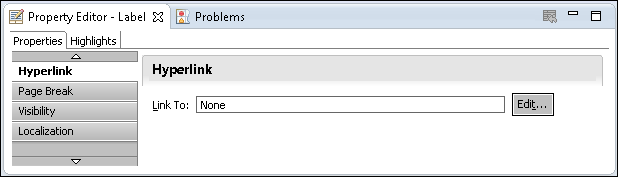
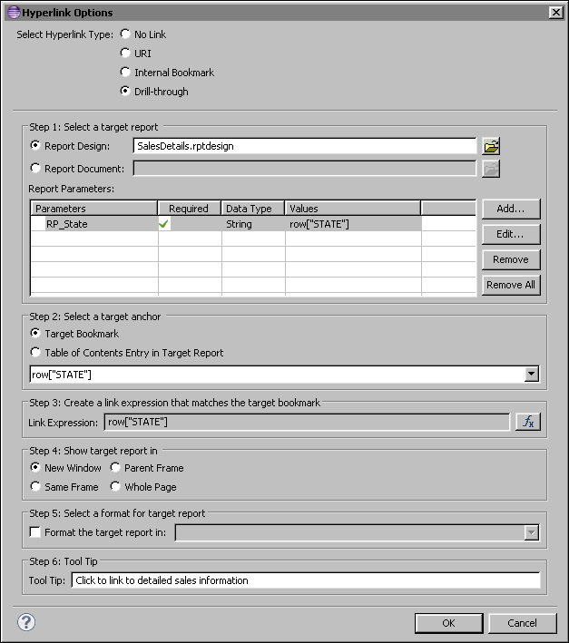
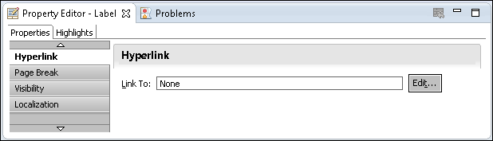
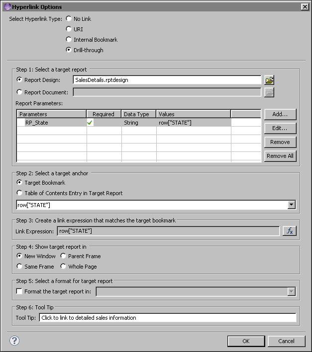

How to link two reports 1 In the source report, select the source report element. Property Editor displays the properties of the selected report element. 2 In Property Editor, under Properties, select Hyperlink. The hyperlink properties appear, as shown in Figure 18-6.  Figure 18-6 Hyperlink properties 3 Choose Edit. 4 In Hyperlink Options, complete the following tasks: 1 In Select hyperlink type, choose Drill-through. 2 In Select a target report, complete one of the following tasks: Select Report Design then choose the Browse For File button and navigate to the target report design. Select Report Document then choose the Browse For File button and navigate to the target report document. If the target report has parameters, Report Parameters is enabled. 3 To set the value for a report parameter in the target report, perform the following steps: 1 Select the field below the Parameters column heading. 2 Select a parameter name from the drop-down list in this field. 3 Select the field below the Required column heading. A check mark appears if the target report requires a value for this parameter. 4 Select the field below the Values column heading. 5 Type an expression in this field, or choose the ellipsis button to build an expression. To set the values for remaining parameters in the target report design, perform these steps in further empty rows in Report Parameters. 4 In Select a target anchor, complete one of the following tasks: Select Target Bookmark then select a bookmark from the drop-down list. Select Table of Contents Entry in Target Report then select a table of contents entry from the drop-down list. 5 In Create a link expression that matches the target bookmark, choose the expression builder button and build an expression, for example, row["CUSTOMERNAME"]. 6 In Show target report in, select an option indicating the window or frame in which to display the target report. 7 To choose an output format that is not HTML, select Format the target report in. Then, in Format the target report in, select one of the available options. 8 In Tool Tip, type a help message that describes the hyperlink. This message appears when the user places the mouse pointer over the hyperlink. Figure 18-7 shows sample entries in Hyperlink Options.  Figure 18-7 Hyperlink properties drill-through options sample entries Choose OK.

